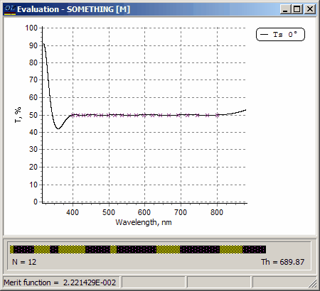

Exercise 12. Needle Optimization - design of neutral beamsplitter
Exercise 12. Needle Optimization - design of neutral beamsplitter
This exercise will further demonstrate the power of the needle optimization procedure. We shall design a neutral beam splitter for the normal incidence case over the spectral range from 400 to 800nm. In spite of the entirely different target specification we can use the same starting design as in the previous example.
Required files are located in the Problem directory EX12. In SF Mode you need to use Import Problem Directory command (File Menu).
Load GLASS substrate, SIO2 and TIO2 layer materials, and Nbs50 target. This target has 20 logarithmically distributed spectral points in the range from 400 to 800 nm with target transmittance value TS = 50%.
Load also the starting design SOMETHING to memory.
Choose the Newton method (Analysis and Synthesis Options dialog).
Start the Needle Optimization AUTO procedure. In a short time the 12-layer beamsplitter will be obtained. The value of the merit function is equal to 0.0222. This means that the average deviation of the actual transmittance from the target value of 50% is only 0.022%.
